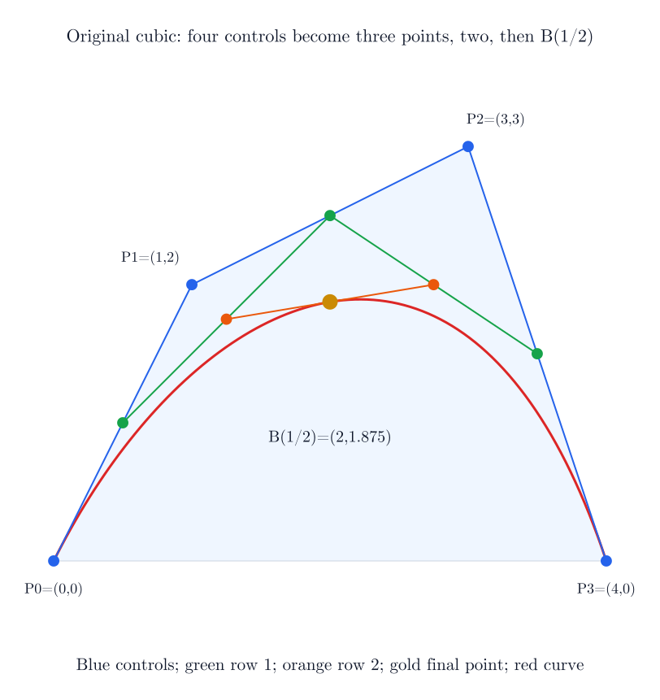
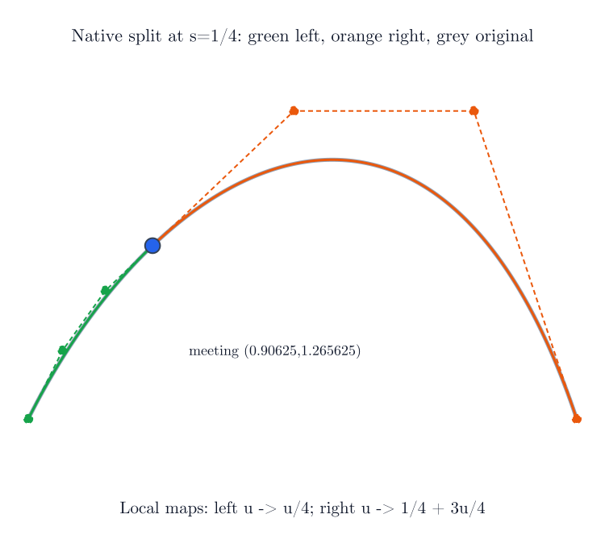
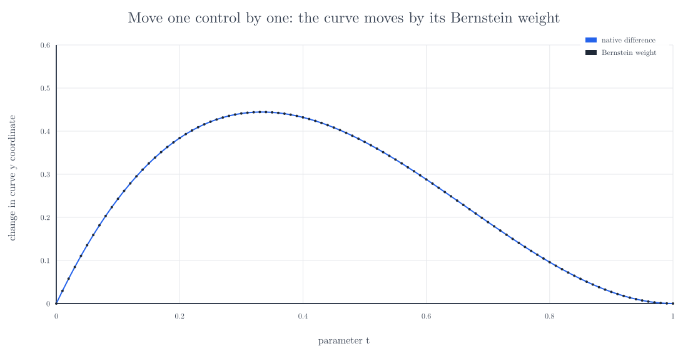
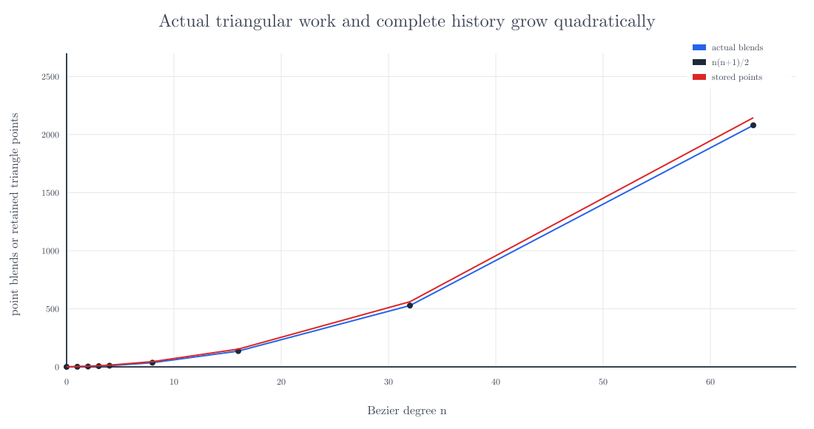

De Casteljau: Actual Bézier Triangles, Subdivision and Conditioning
Abstract
A Bézier curve turns a short sequence of control points into a smooth parametric path. Evaluating the path and splitting it into smaller pieces should preserve its geometry, including its endpoints. De Casteljau's algorithm does both through repeated linear interpolation. We begin with the original four controls and their complete midpoint triangle, now captured directly by the native evaluator. Reusable subdivision produces two control nets whose local parameters map back to the same original curve. Controlled perturbations explain absolute sensitivity without promising small relative error near cancellation. Actual blend counts, complete triangle/output/work caps and independent Bernstein checks make the report executable beyond its original hand-reconstructed scaffold.
The original cubic, with every actual midpoint row
The controls are (0,0), (1,2), (3,3) and (4,0). At t=1/2, the first interpolation row has three points, the second two, and the last one: B(1/2)=(2,1.875). The complete table below comes from the native evaluator's actual updates. The report does not reimplement the recurrence to reconstruct those rows. The curve's 101 display samples also come from the core sampler, which includes both requested parameter endpoints without repeated step addition. The native diagram uses equal horizontal and vertical geometric scales.
#include <dm/dm.hpp>
int main() {
std::filesystem::create_directories("build");
const std::vector<dm::algorithms::PlanarPoint> control{{0,0},{1,2},{3,3},{4,0}};
const auto a=dm::algorithms::de_casteljau_trace(control,.5);const auto curve=dm::algorithms::de_casteljau_sample(control);
if(a.point.x!=2 || a.point.y!=1.875 || a.point_blends!=6 || curve.size()!=101)return 1;
dm::graphics::Diagram d(170,1100);const std::vector<dm::graphics::RGB> colors{{37,99,235},{22,163,74},{234,88,12},{202,138,4}};
std::vector<dm::graphics::DiagramPoint> hull;for(const auto& p:control)hull.push_back({p.x,p.y});
dm::graphics::DiagramStroke boundary;boundary.color={203,213,225};boundary.width=1;d.polygon(hull,{239,246,255},boundary);
std::vector<dm::graphics::DiagramPoint> path;for(const auto& p:curve)path.push_back({p.x,p.y});
dm::graphics::DiagramStroke red;red.color={220,38,38};red.width=3;d.path(path,red);
std::print("| level r | row index i | actual x | actual y |\n| ---: | ---: | ---: | ---: |\n");
for(std::size_t r=0;r<a.levels.size();++r) {
std::vector<dm::graphics::DiagramPoint> points;for(const auto& p:a.levels[r])points.push_back({p.x,p.y});
dm::graphics::DiagramStroke line;line.color=colors[r];line.width=2;
if(points.size()>1)d.path(points,line);for(const auto& p:points)d.ellipse(p,r==3?.05:.035,r==3?.05:.035,colors[r],line);
for(std::size_t i=0;i<a.levels[r].size();++i)std::print("| {} | {} | {} | {} |\n",r,i,a.levels[r][i].x,a.levels[r][i].y);
}
d.text({2,3.8},"Original cubic: four controls become three points, two, then B(1/2)",22)
.text({0,-.2},"P0=(0,0)",18).text({.7,2.2},"P1=(1,2)",18).text({3.2,3.2},"P2=(3,3)",18).text({4,-.2},"P3=(4,0)",18)
.text({2,.9},std::format("B(1/2)=({},{})",a.point.x,a.point.y),20)
.text({2,-.75},"Blue controls; green row 1; orange row 2; gold final point; red curve",21)
.save_svg("build/de_casteljau.svg");
std::print("\nOriginal endpoints: B(0)={}; B(1)={}. Midpoint {}. Actual point blends {}; stored points {}; curve samples {}.\n",dm::algorithms::de_casteljau(control,0),dm::algorithms::de_casteljau(control,1),a.point,a.point_blends,a.shape.stored_points,curve.size());
}| level r | row index i | actual x | actual y |
|---|---|---|---|
| 0 | 0 | 0 | 0 |
| 0 | 1 | 1 | 2 |
| 0 | 2 | 3 | 3 |
| 0 | 3 | 4 | 0 |
| 1 | 0 | 0.5 | 1 |
| 1 | 1 | 2 | 2.5 |
| 1 | 2 | 3.5 | 1.5 |
| 2 | 0 | 1.25 | 1.75 |
| 2 | 1 | 2.75 | 2 |
| 3 | 0 | 2 | 1.875 |
Original endpoints: B(0)=PlanarPoint(0, 0); B(1)=PlanarPoint(4, 0). Midpoint PlanarPoint(2, 1.875). Actual point blends 6; stored points 10; curve samples 101.

Derive the recurrence, endpoint property and convex bound
For degree n=m−1 and nonempty controls P₀…P_n, define
Induction on r expands every intermediate point into a Bernstein sum over its consecutive original controls:
Substitute the two preceding-row expansions into the recurrence. Combining coefficients uses Pascal's identity, completing the induction. This proves equivalence with the Bernstein form without requiring the implementation to compute binomial coefficients or powers. At t=0 every blend keeps its left parent, and at t=1 it keeps its right parent; the final values are P₀ and P_n. For t in [0,1], weights are nonnegative and sum to one, so all intermediate points and the curve lie in the controls' convex hull in exact arithmetic. The original example's interior controls influence the arch; a general Bézier curve need not avoid every interior control point.
The canonical function retains the original weighted-double update order (1−t)*left+t*right on a copied vector, moving through each row in increasing index order. The right parent has not yet been overwritten. Finite t outside [0,1] still evaluates the polynomial, as the original implementation did, but the weights cease to be convex and the hull bound no longer follows. Empty controls retain the legacy (0,0) sentinel, which does not define a Bézier curve. A singleton is a constant curve. All parameters and controls must now be finite, including an empty-input parameter; nonfinite weighted results raise an explicit error instead of propagating silently.
Subdivision is a native operation, not just a diagram
Fix a split s in [0,1]. The left control net is the triangle's first point in each row, P₀(0), P₀(1), …, P₀(n). The right net is its last point in reverse row order, P₀(n), P₁(n−1), …, P_n(0). Their common control is the same computed B(s). For local u in [0,1], their exact identities are
For the left identity, insert the Bernstein expansion of each diagonal control into L(u), interchange sums, and use binom(n,r)binom(r,j)=binom(n,j)binom(n−j,r−j). The remaining binomial sum is (1−u+u(1−s))(n−j)=(1−su)(n−j), leaving the Bernstein coefficients of B(su). Reverse the original controls and apply the same argument for the right identity. At s=0 the left net is constant; at s=1 the right is constant. No division by a zero-length subinterval is needed to extract these nets. They are equal parameter halves only when s=1/2.
The program splits the original cubic at s=1/4. The core retains only the two diagonals during this solve, using O(m) storage; no complete triangle or repeated curve evaluation is needed to produce them. A grid of 101 local values checks both parameter mappings by ordinary native evaluations. The coloured children and their control nets are shown at equal geometric scales. A finite grid checks this implementation, while the identity above explains the continuous mathematical curves.
#include <dm/dm.hpp>
int main() {
std::filesystem::create_directories("build");
const std::vector<dm::algorithms::PlanarPoint> control{{0,0},{1,2},{3,3},{4,0}};const double s=.25;
const auto split=dm::algorithms::de_casteljau_subdivide(control,s);
dm::graphics::Diagram d(170,1100);dm::graphics::DiagramStroke grey;grey.color={148,163,184};grey.width=5;
std::vector<dm::graphics::DiagramPoint> original;for(const auto& p:dm::algorithms::de_casteljau_sample(control,200))original.push_back({p.x,p.y});d.path(original,grey);
const std::vector<std::vector<dm::algorithms::PlanarPoint>> nets{split.left,split.right};const std::vector<dm::graphics::RGB> colors{{22,163,74},{234,88,12}};
for(std::size_t k=0;k<nets.size();++k) {
dm::graphics::DiagramStroke line;line.color=colors[k];line.width=2;line.dashed=true;
std::vector<dm::graphics::DiagramPoint> points;for(const auto& p:nets[k])points.push_back({p.x,p.y});d.path(points,line);for(const auto& p:points)d.ellipse(p,.03,.03,colors[k],line);
line.dashed=false;line.width=3;points.clear();for(const auto& p:dm::algorithms::de_casteljau_sample(nets[k]))points.push_back({p.x,p.y});d.path(points,line);
}
double error=0;
for(int i=0;i<=100;++i) {
const double u=i/100.;const auto l=dm::algorithms::de_casteljau(split.left,u),r=dm::algorithms::de_casteljau(split.right,u),a=dm::algorithms::de_casteljau(control,s*u),b=dm::algorithms::de_casteljau(control,s+(1-s)*u);
error=std::max({error,std::abs(l.x-a.x),std::abs(l.y-a.y),std::abs(r.x-b.x),std::abs(r.y-b.y)});
}
if(error>1e-12 || split.point_blends!=6)return 1;
std::print("| control index | left x | left y | right x | right y |\n| ---: | ---: | ---: | ---: | ---: |\n");
for(std::size_t i=0;i<split.left.size();++i)std::print("| {} | {} | {} | {} | {} |\n",i,split.left[i].x,split.left[i].y,split.right[i].x,split.right[i].y);
const auto meet=split.left.back();d.ellipse({meet.x,meet.y},.055,.055,{37,99,235})
.text({2,2.8},"Native split at s=1/4: green left, orange right, grey original",22)
.text({1.8,.5},std::format("meeting ({},{})",meet.x,meet.y),18)
.text({2,-.65},"Local maps: left u -> u/4; right u -> 1/4 + 3u/4",21)
.save_svg("build/casteljau_subdivision.svg");
std::print("\nTwo native nets have {} and {} controls; actual point blends {}. Maximum coordinate identity residual over 101 local parameters: {:.9g}.\n",split.left.size(),split.right.size(),split.point_blends,error);
}| control index | left x | left y | right x | right y |
|---|---|---|---|---|
| 0 | 0 | 0 | 0.90625 | 1.265625 |
| 1 | 0.25 | 0.5 | 1.9375 | 2.25 |
| 2 | 0.5625 | 0.9375 | 3.25 | 2.25 |
| 3 | 0.90625 | 1.265625 | 4 | 0 |
Two native nets have 4 and 4 controls; actual point blends 6. Maximum coordinate identity residual over 101 local parameters: 1.33226763e-15.

Absolute sensitivity does not promise small relative error
At a fixed t in [0,1], perturb every control by at most ε in a chosen norm. Because Bernstein weights are nonnegative and sum to one,
This is a statement about control-data perturbations in exact arithmetic; it is not a bound on all floating arithmetic errors. If only the second control's y coordinate increases by one in the original cubic, the exact y displacement is its Bernstein weight 3t(1−t)². The program compares this formula with two sampled curves. Its continuous maximum is 4/9 at t=1/3; the display grid need not include that exact parameter.
Relative conditioning is different. A linear curve with controls x=1016 and x=−1016 has midpoint zero. Changing the latter by two, a relative control change of 2×10^−16, makes the midpoint one. Relative change compared with the original zero answer is undefined. This is cancellation in the problem, not evidence that repeated interpolation has failed. Convexity and “numerically stable” must not be read as a universal guarantee of small relative error at a nearly cancelled answer. The finite weighted-sum implementation can also reject extrapolations whose intermediate products overflow even when some alternative algebraic rearrangement would be finite.
#include <dm/dm.hpp>
int main() {
std::filesystem::create_directories("build");
const std::vector<dm::algorithms::PlanarPoint> control{{0,0},{1,2},{3,3},{4,0}};auto changed=control;changed[1].y+=1;
const auto base=dm::algorithms::de_casteljau_sample(control),perturbed=dm::algorithms::de_casteljau_sample(changed);
std::vector<double> t_values,effect,theory;double residual=0,max_effect=0;
std::print("| parameter t | native y displacement | Bernstein prediction |\n| ---: | ---: | ---: |\n");
for(std::size_t i=0;i<base.size();++i) {
const double t=i/100.,delta=perturbed[i].y-base[i].y,prediction=3*t*(1-t)*(1-t);
t_values.push_back(t);effect.push_back(delta);theory.push_back(prediction);residual=std::max(residual,std::abs(delta-prediction));max_effect=std::max(max_effect,std::abs(delta));
if(i%25==0)std::print("| {} | {} | {} |\n",t,delta,prediction);
}
const auto zero=dm::algorithms::de_casteljau({{1e16,0},{-1e16,0}},.5),one=dm::algorithms::de_casteljau({{1e16,0},{-1e16+2,0}},.5),outside=dm::algorithms::de_casteljau({{0,0},{1,1}},2);
if(residual>1e-12 || max_effect>1 || zero.x!=0 || one.x!=1 || outside.x!=2)return 1;
std::print("\nOne-control displacement: grid maximum {:.6f}, theory residual {:.9g}, control perturbation bound 1.\n",max_effect,residual);
std::print("Cancellation control: midpoint before {}; after a +2 control change {}. Finite extrapolation of the unit line at t=2: {}.\n",zero,one,outside);
auto p=dm::graphics::RPlot::create();
p.line(t_values,effect,"native difference",{37,99,235},2).points(t_values,theory,"Bernstein weight",{31,41,55},2)
.legend({"native difference","Bernstein weight"},{{37,99,235},{31,41,55}})
.title("Move one control by one: the curve moves by its Bernstein weight")
.x_label("parameter t").y_label("change in curve y coordinate")
.x_limits(0,1).y_limits(0,.6).size(1100,570).save_svg("build/casteljau_sensitivity.svg");
}| parameter t | native y displacement | Bernstein prediction |
|---|---|---|
| 0 | 0 | 0 |
| 0.25 | 0.421875 | 0.421875 |
| 0.5 | 0.375 | 0.375 |
| 0.75 | 0.140625 | 0.140625 |
| 1 | 0 | 0 |
One-control displacement: grid maximum 0.444411, theory residual 4.99600361e-16, control perturbation bound 1. Cancellation control: midpoint before PlanarPoint(0, 0); after a +2 control change PlanarPoint(1, 0). Finite extrapolation of the unit line at t=2: PlanarPoint(2, 2).

Actual quadratic work, owned history and complete limits
For m=n+1 controls, row lengths are m,m−1,…,1. The number of point blends and complete stored triangle points are therefore
The trace counter increments in the actual inner loop. A point blend updates two coordinates; its count is not a count of machine instructions or elapsed time. The scalar evaluator uses O(m) working memory, full tracing O(m²) history, and subdivision O(m) working/output memory. Sampling k parameters uses O(m+k) storage and O(m+k(m²+1)) work, including validation once. It is uniform parameter sampling, without an adaptive chord-error tolerance.
The shape helper cancels factors before checked multiplication. Trace caps include every initial control and every update, subdivision caps include both m-point outputs including both copies of their meeting point, and sampling caps include all k output points and prospective kJ blends. These checks follow full finite-input validation and precede allocation. Zero disables only an optional cap; arithmetic and capacity checks remain. Failures return no partial triangle, child net or misleading truncated curve.
#include <dm/dm.hpp>
int main() {
std::filesystem::create_directories("build");
std::vector<double> degree,actual,theory,stored;
std::print("| degree n | controls m | actual point blends | predicted n(n+1)/2 | stored points | coordinate blends |\n| ---: | ---: | ---: | ---: | ---: | ---: |\n");
for(std::size_t n:{0,1,2,3,4,8,16,32,64}) {
const auto a=dm::algorithms::de_casteljau_trace(std::vector<dm::algorithms::PlanarPoint>(n+1,{1,2}),.5);
if(a.point_blends!=n*(n+1)/2)return 1;
degree.push_back(n);actual.push_back(a.point_blends);theory.push_back(n*(n+1)/2);stored.push_back(a.shape.stored_points);
std::print("| {} | {} | {} | {} | {} | {} |\n",n,n+1,a.point_blends,n*(n+1)/2,a.shape.stored_points,a.shape.coordinate_blends);
}
const std::vector<dm::algorithms::PlanarPoint> c{{0,0},{1,2},{3,3},{4,0}};int rejected=0;
try{(void)dm::algorithms::de_casteljau_trace(c,.5,9);}catch(const std::length_error&){++rejected;}
try{(void)dm::algorithms::de_casteljau_subdivide(c,.5,7);}catch(const std::length_error&){++rejected;}
try{(void)dm::algorithms::de_casteljau_sample(c,4,0,1,4,30);}catch(const std::length_error&){++rejected;}
try{(void)dm::algorithms::de_casteljau_sample(c,4,0,1,5,29);}catch(const std::length_error&){++rejected;}
try{(void)dm::algorithms::de_casteljau({},std::numeric_limits<double>::quiet_NaN());}catch(const std::invalid_argument&){++rejected;}
const double big=std::numeric_limits<double>::max();
try{(void)dm::algorithms::de_casteljau({{big,0},{big,0}},2);}catch(const std::overflow_error&){++rejected;}
const auto exact=dm::algorithms::de_casteljau_trace(c,.5,10);const auto nets=dm::algorithms::de_casteljau_subdivide(c,.5,8);const auto grid=dm::algorithms::de_casteljau_sample(c,4,0,1,5,30);const auto unlimited=dm::algorithms::de_casteljau_trace(c,.5,0);
if(rejected!=6 || exact.shape.stored_points!=10 || nets.left.size()+nets.right.size()!=8 || grid.size()!=5 || unlimited.point.y!=1.875)return 1;
std::print("\nComplete triangle/net/sample/work caps, nonfinite parameter and finite-intermediate overflow: {} expected rejections. Exact limits 10,8,5,30 succeed; zero-disabled triangle cap succeeds.\n",rejected);
std::print("Legacy empty-control sentinel {}; constant singleton {}. These are distinct from subdivision, which requires at least one control.\n",dm::algorithms::de_casteljau({},2),dm::algorithms::de_casteljau({{2,3}},-1));
auto p=dm::graphics::RPlot::create();
p.line(degree,actual,"actual blends",{37,99,235},2).points(degree,theory,"n(n+1)/2",{31,41,55},4)
.line(degree,stored,"stored points",{220,38,38},2).legend({"actual blends","n(n+1)/2","stored points"},{{37,99,235},{31,41,55},{220,38,38}})
.title("Actual triangular work and complete history grow quadratically")
.x_label("Bezier degree n").y_label("point blends or retained triangle points")
.x_limits(0,68).y_limits(0,2700).size(1100,580).save_svg("build/casteljau_work.svg");
}| degree n | controls m | actual point blends | predicted n(n+1)/2 | stored points | coordinate blends |
|---|---|---|---|---|---|
| 0 | 1 | 0 | 0 | 1 | 0 |
| 1 | 2 | 1 | 1 | 3 | 2 |
| 2 | 3 | 3 | 3 | 6 | 6 |
| 3 | 4 | 6 | 6 | 10 | 12 |
| 4 | 5 | 10 | 10 | 15 | 20 |
| 8 | 9 | 36 | 36 | 45 | 72 |
| 16 | 17 | 136 | 136 | 153 | 272 |
| 32 | 33 | 528 | 528 | 561 | 1056 |
| 64 | 65 | 2080 | 2080 | 2145 | 4160 |
Complete triangle/net/sample/work caps, nonfinite parameter and finite-intermediate overflow: 6 expected rejections. Exact limits 10,8,5,30 succeed; zero-disabled triangle cap succeeds. Legacy empty-control sentinel PlanarPoint(0, 0); constant singleton PlanarPoint(2, 3). These are distinct from subdivision, which requires at least one control.

Independent controls and practical scope
Nine new tests pass AddressSanitizer and UndefinedBehaviorSanitizer. Three hundred seeded integer control nets of degrees zero through twelve are checked at all nine eighth-grid parameters: an independent signed-128-bit Bernstein numerator checks every point of every actual triangle row. The chosen small integers and dyadic degrees fit exact double arithmetic, so these checks compare exact values. Another hundred nets, five split values including zero and one, and seventeen local parameters check both subdivision identities and diagonal ownership. One thousand non-dyadic random controls check a separate long-double Bernstein sum, affine transformation, unit- interval bounding boxes and finite extrapolation. Tests retain the original cubic, all triangle entries, endpoints, sample-grid ordering and tiny/equal/ descending intervals, empty/singleton behavior, ownership, complete caps, count overflow, validation precedence, explicit arithmetic overflow and the controlled sensitivity/cancellation examples. Native de Boor reduction and existing interpolation/format tests check compatibility with neighbouring APIs.
These finite controls do not turn floating rows into exact convex-hull certificates or provide a general bound on relative arithmetic error. Subdivision supplies reusable control nets, and uniform sampling supplies complete display grids; neither implements adaptive stopping or guarantees a display polyline's chord error. No external dataset is needed: the original cubic teaches the geometry, and exact arithmetic/perturbation/degree controls test the stated identities and limits directly.
References
- Paul de Casteljau (1985), Formes à pôles, Mathématiques et CAO, volume 2, Hermès, Paris. [Bibliographic record](https://bibliotheque.map.cnrs.fr/index.php?id=86&lvl=notice_display). The original author's treatment of the construction.
- Gerald Farin (2002), Curves and Surfaces for CAGD: A Practical Guide, fifth edition, ISBN 1-55860-737-4. [Author's contents and materials](https://www.farinhansford.com/books/cagd/toc.html). De Casteljau, Bernstein and subdivision topics provide the mathematical framework; this implementation retains the repository's double weighted-sum update order.
- Nicholas M. Patrikalakis, Takashi Maekawa and Wonjoon Cho, Shape Interrogation for Computer Aided Design and Manufacturing, [Bézier evaluation and subdivision](https://web.mit.edu/hyperbook/Patrikalakis-Maekawa-Cho/node13.html). The two control-diagonal interpretation matches the subdivision operation exposed here.